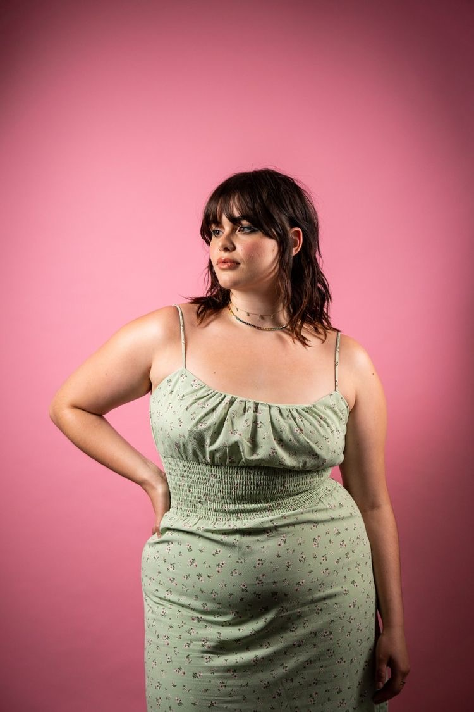
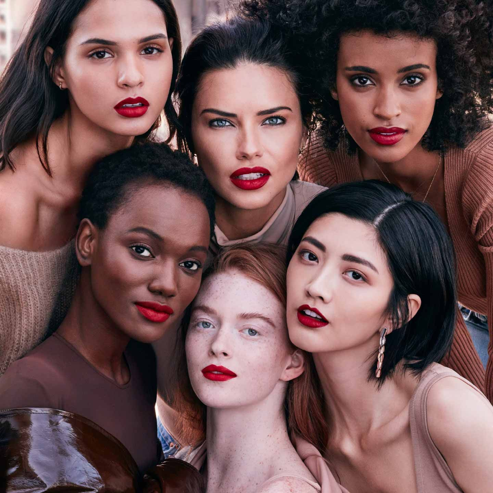

Fat is the moral to the story. It is the worst case scenario. Fat means being isolated, alone, lazy, weak-willed. It means being ugly and unloved. Fat means giving up. Fat means that the side comments and overt aggression from strangers, family, friends, doctors — all of that continues.
But you don’t deserve that treatment. No one does. You don’t deserve the well-intentioned bullying of family members who insist that they’re only acting out of concern for you. Your body doesn’t entitle partners to belittle and abuse you. Your weight doesn’t mean you deserve to be condescended to, shamed or ignored at the doctor’s office. Having a fat body doesn’t mean that anyone can treat you however they want.
You are fat. And you can move on.
It can be hard to know who you are if you’re not always thinking and talking about losing weight. You might feel adrift. But that feeling is a precursor to the most divine liberation. It is the glimmer of fiery sky before the sunrise. It is a new day, and now the world is yours.
MY BODY IS NOT YOURS TO CRITIQUE AND DISCUSS. MY BODY IS NOT YOURS FOR CONSUMPTION. MY BODY IS MY VESSEL. AN ARCHIVE OF EXPERIENCES. A WEAPON THAT HAS FOUGHT BATTLES ONLY I UNDERSTAND. A LIBRARY OF LOVE, PAIN, STRUGGLE, VICTORY, AND MYSTERY. YOUR EYES CANNOT DEFINE ALL IT HAS ENDURED. DO NOT PLACE VALUE UPON MY BODY, PLACE IT UPON MY BEING.
Stop criticizing yourself for the body image that you see in the mirror. You are beautiful and it’s time to learn to love your body.
|  | 'TOO FAT, TOO SKINNY, TOO SHORT, TOO TALL, TOO ANYTHING: THERE'S A SENSE THAT WE'RE ALL. 'TOO' SOMETHING, AND WE'RE ALL NOT ENOUGH. THIS IS LIFE. OUR BODIES CHANGE. OUR MINDS CHANGE. OUR HEARTS CHANGE. Real women have whatever body type they want whether it be curvy, stick thin, or in between. Shut up with the "real women have curves" because you are shaming skinny women and that's not the right way to rid fat shaming. |
| Dear Body, When did I start hating you? I know I didn't come into this world feeling like you were the enemy. Once upon a time, we were a team. As I got older, I began to place your worth in how little space you took up. You see, I grew up in a world where I was taught to hate you. We're fighting a war against perfection', and no one escapes unscathed. They attack us with advertisements. Headlines harass us. We spend so much of our precious time and money trying to 'fix' something that was never broken. |
ACNE IS NATURAL, STRETCH MARKS ARE NATURAL, FAT IS NATURAL, AND BODY HAIR IS NATURAL FOR ALL GENDERS. WHEN ARE YOU ALL GONNA REALIZE THIS.
Real breasts aren't identical.
Real butts have stretch marks.
Real skin has freckles & scars.
That's alright. And that's still beautiful.
Asian Woman
Asian women's beauty extends far beyond physical attributes. They exude elegance, grace, and an undeniable inner strength that is deeply rooted in their cultural heritage. From their impeccable sense of style to their unwavering resilience, Asian women leave an indelible mark wherever they go. Their dedication to family, respect for tradition, and pursuit of excellence are qualities that inspire admiration and reverence.
In a world where beauty ideals continue to evolve, Asian women's beauty remains timeless and enchanting. Their allure stems not only from their physical attributes but also from their rich cultural heritage and the values they uphold. Asian women serve as a reminder that true beauty lies in embracing one's unique identity, fostering self-confidence, and celebrating the diverse tapestry of beauty that spans across continents.
The Black Woman
"The Black woman is art; a perfect expression of pain, struggle, strength, and beauty."
The love of a Black woman.
The love you give is radical. It changes everything and everyone around you. The way that you pour yourself into your relationships and friendships. The way that everything you create reaches out and touches us. The way that your presence and glow speak for itself.
The beauty of Black women is a remarkable tapestry that weaves together strength, resilience, and an unmatched sense of grace. From their radiant skin that glistens like gold in the sun to their luscious, diverse hair that defies gravity and forms intricate patterns, Black women possess a captivating allure that is undeniably captivating. Their features, like the rich melanin that blesses their skin, tell stories of heritage, culture, and centuries of wisdom passed down through generations. It is within this diversity of features and hues that the beauty of Black women truly shines.
Every woman has her own unique beauty, encompassing both her physical features and inner qualities. However, it's not uncommon for insecurities to creep in, particularly when it comes to the shape of one's face. One woman may feel self-conscious about having a round face, while another may long for a more angular jawline. These insecurities can stem from societal pressures and unrealistic beauty standards that promote a narrow definition of beauty.
It's crucial to recognize that every face is inherently distinctive, like a captivating work of art. Just as no two snowflakes are alike, each face bears its own combination of contours, angles, and proportions. These variations should be celebrated rather than diminished, as they contribute to the rich tapestry of human diversity.
| Understanding that beauty lies beyond conformity allows us to embrace our individuality with confidence and grace. It's through these unique features that our personalities shine, conveying stories, experiences, and emotions that are uniquely our own. We should never strive to fit into a mold but rather appreciate the beauty that radiates from within and manifests in the distinctive shape of our face. |  | Let us remember that true beauty is not confined to a specific set of physical attributes, but rather springs forth from self-acceptance, self-love, and celebrating the diversity that makes each woman extraordinary. By embracing the uniqueness of our faces and valuing our own inherent beauty, we can inspire others to do the same, fostering a world that appreciates and cherishes the rich tapestry of human appearances. |